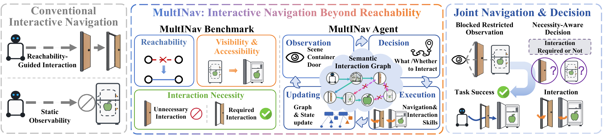
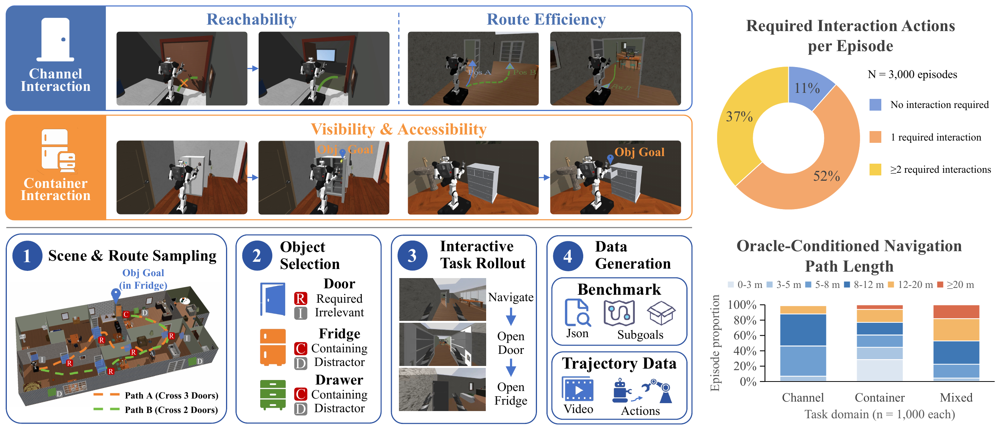
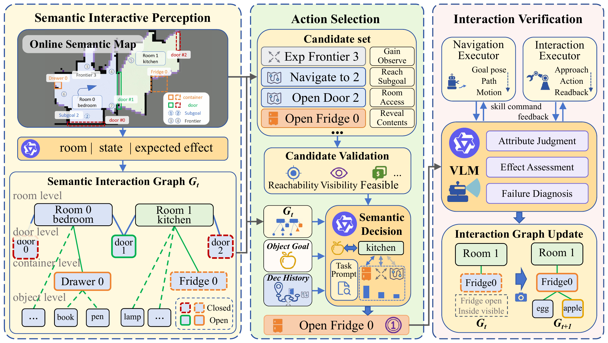
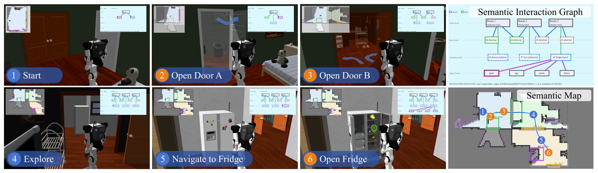
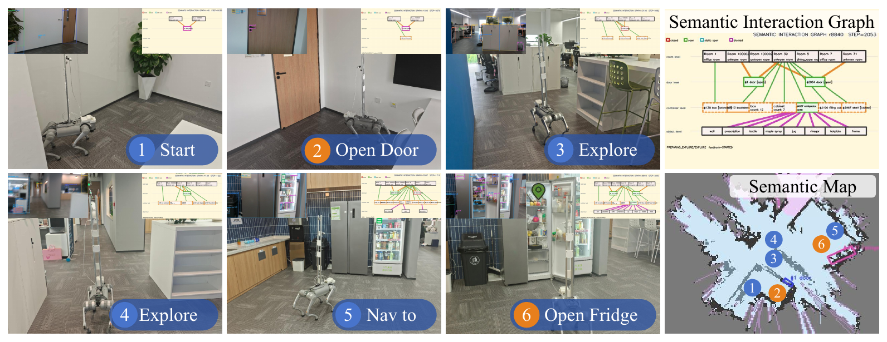

Interactive navigation beyond reachability
A formulation that unifies channel-induced connectivity changes, container-induced visibility changes, and the sequential order in which they must be resolved.
Embodied AI · Interactive Navigation
1Beijing Institute of Technology 2Zhongguancun Academy 3Peking University
*Equal contribution ✉Corresponding author

Existing embodied navigation tasks commonly assume that traversability and object states remain fixed during an episode. Yet reaching a goal may require opening a door to access a room and then opening a container to reveal a hidden target. We formulate interactive navigation beyond reachability, unifying channel-induced changes in spatial connectivity, container-induced changes in target visibility, and their sequential dependencies.
We introduce MultINav-Bench, a 3K-episode ObjectGoal benchmark in MolmoSpaces spanning channel, container, and mixed tasks, with interaction-necessity annotations covering required and unnecessary episodes. Its data generation pipeline automates task construction across multiple task types. The evaluation protocol separately measures navigation success, interaction effectiveness, and cost.
We further propose MultINav-Agent, a three-stage agentic framework built on a persistent, state-conditioned interaction graph. Semantic interactive perception grounds entities and interaction states; a vision-language model selects task-relevant actions based on expected changes in connectivity and target observability; and post-interaction verification updates the graph to guide subsequent navigation, exploration, or interaction. Experiments on MultINav-Bench show that MultINav-Agent consistently outperforms adapted baselines across channel, container, and mixed tasks.
A formulation that unifies channel-induced connectivity changes, container-induced visibility changes, and the sequential order in which they must be resolved.
3,000 ObjectGoal episodes across 639 houses — 1,000 channel, 1,000 container, and 1,000 mixed — with interaction-necessity labels and a five-metric protocol.
A persistent, state-conditioned interaction graph that connects semantic perception, effect-guided action selection, and post-interaction verification.
A diagnostic ObjectGoal benchmark for navigation under interaction-induced state changes. An episode may require opening a passage door, exposing a target concealed inside a container, or composing both operations in sequence before navigation can succeed.
Chan., Cont., and Obj. denote channels, containers, and manipulable objects. Reported scale follows the respective publications.
| Benchmark | Endpoint | Chan. | Cont. | Evaluated state effect | Reported scale / envs. |
|---|---|---|---|---|---|
| Non-interactive benchmarks (fixed environment state) | |||||
| Habitat ObjectNav | ObjectGoal | Static | 2.8M eps. / 90 envs. | ||
| MolmoSpaces Navigate-to | ObjectGoal | Static | 2K traj. / 679 envs. | ||
| R2R | InstructionGoal | Static | 21.6K instr. / 90 envs. | ||
| VLN-CE | InstructionGoal | Static | R2R annot. / 90 envs. | ||
| Interactive benchmarks (environment-changing actions) | |||||
| Interactive Gibson | PointGoal | ✓ | Free space + disturbance | 106 envs. | |
| Interactive Visual Nav. | PointGoal | Free space | 15K eps. / 120 envs. | ||
| CaMP | PointGoal | Free space | 600K eps. / 12K envs. | ||
| InterNav | PointGoal | ✓ | Free space + connectivity | 150 eval / 15 envs. | |
| ALFRED | Household | ✓ | Object state | 8K demos / 120 envs. | |
| BEHAVIOR-1K | Activity | ✓ | Goal predicates | 1K activities / 50 envs. | |
| MultINav-Bench (ours) | ObjectGoal | ✓ | ✓ | Connectivity + target exposure | 3K eps. / 639 envs. |
Hinged doors govern spatial reachability, including critical closed doors (required),
distractor doors (unnecessary), and composite layouts.
Refrigerators, cabinets, and drawers expose occluded targets, enabling the visibility that terminal ObjectGoal success requires.
Sequential composition is mandatory — for example, traversing a closed door to reach a closed refrigerator that hides the goal.

The embodied state is st = (xt, Mt, zt), combining the robot state, a geometric and semantic map, and the articulation states of interactive entities. Actions combine navigation, which updates the robot state, with physical interaction, which modifies traversability or target visibility.
Terminal ObjectGoal success requires stopping within the distance threshold and observing the target in the head camera. Opening a door without locating the target yields no success, which keeps interaction effects separate from the final navigation outcome.
Starting from ProcTHOR-10K houses and NavToObj seeds, candidates are synthesized through counterfactual reachability and visibility checks: closing a channel must sever the shortest route to the goal, while concealing a target inside a container must invalidate initial visibility until it is opened.
Candidates pass articulation readback, target-identity verification, and oracle rollout validation before freezing 1,000 balanced episodes per domain. A full collection mode additionally records multimodal expert demonstrations with synchronized visual streams, base trajectories, and end-effector targets.
| Metric | Direction | What it measures |
|---|---|---|
| SR | higher | Terminal ObjectGoal success under standard distance and visibility thresholds. |
| SPL | higher | Success-weighted planar path efficiency relative to a feasible oracle route, reported on [0, 1]. |
| ISR | higher | Mean fraction of verified necessary interaction effects on required episodes; valid plans receive partial credit. |
| IP | higher | Category-level interaction precision: the episode-mean fraction of attempts producing a verified physical effect in the target interaction class. |
| Total Cost | lower | All-episode mean of normalized operation cost, counting navigation, interactions, and attempts without a qualifying effect. |
A persistent, state-conditioned interaction graph connects semantic perception, action selection, and post-interaction verification. Verified changes update the graph that drives each subsequent navigation, exploration, or interaction decision.

The graph Gt = (Vt, Et) represents rooms, interactive entities, objects, and the robot through connectivity, containment, and visibility relations. Entities are associated across observations while visual attribute inference estimates interaction class and coarse state: open, closed, or uncertain.
Navigation, frontier exploration, and interaction candidates are generated from the graph and map. Eligibility checks on route feasibility, visual evidence, and state reliability constrain the executable set, and a vision-language model ranks candidates by their expected contribution to reaching or observing the target.
Post-interaction verification reconciles fresh observations with execution feedback. Confident evidence updates the affected entity state, while conflicting or occluded evidence is marked uncertain, and failed attempts stay in the decision history to discourage immediate repetition.
Sequential dependencies. Opening a door enables entry into a room; observations there can introduce a container candidate; a verified container opening exposes objects whose observations support the next navigation decision. Each step updates the graph and the available actions.
MultINav-Agent achieves better aggregate values on all five metrics than the MolmoSpaces adaptation of MoMa-LLM, and remains competitive on non-interactive ObjectGoal navigation.
Terminal success rate over 2,000 tasks; leaderboard entries are marked in the paper.
| Method | Tasks | SR (%) ↑ | Domain |
|---|---|---|---|
| MultINav-Agent (ours) | 2,000 | 53.0 | ProcTHOR |
| RING | 2,000 | 48.0 | ProcTHOR |
| DualVLN | 2,000 | 21.0 | Habitat |
| SPOC | 2,000 | 20.15 | ProcTHOR |
| VLFM | 2,000 | 11.90 | Habitat |
Each method is evaluated on 3,000 episodes, 1,000 per split. Each method's first row reports the overall result, followed by its task splits. Bold marks the best value for each metric within the same split.
| Method / Split | Navigation & Task | Interaction | Overall | ||
|---|---|---|---|---|---|
| SR (%) ↑ | SPL ↑ | ISR (%) ↑ | IP (%) ↑ | Cost ↓ | |
| MoMa-LLM | 10.53 | 0.0848 | 23.69 | 27.59 | 0.9309 |
| Channel | 19.60 | 0.1758 | 54.28 | 40.61 | 0.8651 |
| Container | 10.30 | 0.0685 | 2.00 | 2.37 | 0.9324 |
| Mixed | 1.70 | 0.0101 | 25.37 | 39.81 | 0.9951 |
| MultINav-Agent (ours) | 41.63 | 0.2903 | 49.38 | 46.79 | 0.7743 |
| Channel | 55.80 | 0.4567 | 60.09 | 54.29 | 0.6517 |
| Container | 45.00 | 0.3008 | 46.70 | 38.91 | 0.7220 |
| Mixed | 24.10 | 0.1135 | 45.07 | 47.16 | 0.9493 |
MultINav-Agent completes 1,249 of 3,000 episodes and improves SR by 31.10 points, SPL from 0.0848 to 0.2903, and normalized cost from 0.9309 to 0.7743. Channel, container, and mixed SR gains are 36.20, 34.70, and 22.40 points respectively; mixed tasks remain the hardest for both methods.
All four variants use the same frozen subset of 165 houses. Bold marks the best value in each column.
| Method | Navigation & Task | Interaction | Overall | ||
|---|---|---|---|---|---|
| SR (%) ↑ | SPL ↑ | ISR (%) ↑ | IP (%) ↑ | Cost ↓ | |
| Full | 23.0 | 0.107 | 41.8 | 40.4 | 0.961 |
| Flat object memory | 21.0 | 0.100 | 43.8 | 26.7 | 0.963 |
| Greedy selection | 22.0 | 0.134 | 40.9 | 36.9 | 0.933 |
| Perception-only update | 5.5 | 0.033 | 26.6 | 36.6 | 0.988 |
Retaining execution-informed graph updates matters most: replacing verification with a perception-only update drops SR from 23.0% to 5.5% on the ablation subset, while graph memory shows its clearest advantage in interaction precision.
ObjectGoal rollouts from the supplementary material. Each clip follows the agent as it explores, interacts, and verifies the resulting state change before continuing toward the goal.
Channel and container effects, resolved as the agent searches for the target object.

A Go2 quadruped in an indoor environment, with human-assisted door and refrigerator opening. Egocentric observations, intermediate interaction graphs, and the semantic map record the evolving scene representation.

@misc{multinav2026,
title = {Interactive Navigation Beyond Reachability: Benchmark and Agentic Framework},
author = {Li, Delun and Wei, Xueyao and Chen, Rui and Wang, Yifei and
Yu, Junzhi and Song, Wenjie and Chen, Xingyu},
year = {2026},
note = {Preprint}
}The arXiv identifier will be added once it is assigned; code and dataset links are available above.